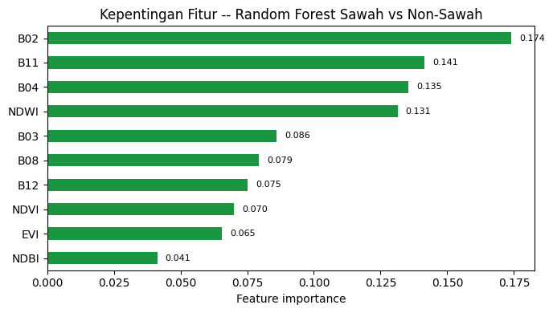
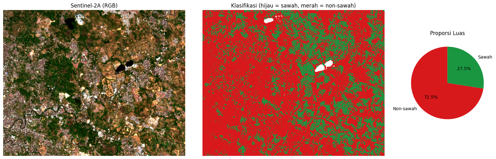

Klasifikasi Lahan Sawah dan Non-Sawah dengan Sentinel-2A Kecamatan Mapanget, Manado#
Notebook ini mengklasifikasikan tutupan lahan menjadi dua kelas, sawah dan non-sawah, memakai citra Sentinel-2A yang diunduh langsung dari Copernicus Data Space Ecosystem, dan algoritma Random Forest. Sampel latihnya berupa 50 poligon sawah dan 50 poligon non-sawah yang sudah didigitasi sebelumnya, masing-masing disimpan sebagai shapefile di dalam folder sawah_mapanget/ dan non_sawah_mapanget/.
1.0 Library#
!pip install requests rasterio scikit-learn numpy matplotlib geopandas -q
import datetime as dt
import math
import os
from pathlib import Path
import geopandas as gpd
import matplotlib.pyplot as plt
import numpy as np
import pandas as pd
import rasterio
import requests
from IPython.display import display
from matplotlib.colors import ListedColormap
from rasterio import features
from rasterio.warp import transform_bounds, transform_geom
from sklearn.ensemble import RandomForestClassifier
from sklearn.metrics import (accuracy_score, classification_report,
cohen_kappa_score, confusion_matrix)
BASE_DIR = Path(os.getcwd())
2.0 Parameter#
# --- Akun Copernicus (OAuth client dari dashboard Sentinel Hub) ---
# Diambil dari Colab Secrets, BUKAN dituliskan langsung di sini.
from google.colab import userdata
CLIENT_ID = userdata.get("CDSE_CLIENT_ID")
CLIENT_SECRET = userdata.get("CDSE_CLIENT_SECRET")
# --- Pencarian citra ---
START_DATE = "2026-06-01" # rentang tanggal pencarian citra
END_DATE = "2026-09-30"
PLATFORM_PREFIX = "S2A" # hanya Sentinel-2A. Isi None untuk semua satelit Sentinel-2
MAX_CLOUD = 30 # % awan maksimum (level tile) untuk kandidat scene
MAX_TRIES = 5 # coba maks. N scene terbaik sampai area sampel cukup bersih
MIN_VALID = 0.90 # minimal fraksi piksel bebas awan di area unduhan
MASK_CLOUD = True # buang awan/bayangan awan/salju memakai band SCL
BUFFER_M = 1500 # margin area unduhan di sekeliling sampel (meter)
# --- Sampel & model ---
N_SAMPLE = 50 # jumlah poligon sampel PER KELAS
FOLDER_SAWAH = BASE_DIR / "sawah_mapanget" # kelas = 1
FOLDER_NONSAWAH = BASE_DIR / "non_sawah_mapanget" # kelas = 0
TRAIN_FRAC = 0.7 # porsi poligon untuk training (sisanya testing)
N_TREES = 200
SEED = 42
# --- File ---
# Jika file ini sudah ada, unduhan dilewati (boleh juga diisi TIF manual dari
# Copernicus Browser dengan band B02,B03,B04,B08,B11,B12 berurutan).
TIF_IN = BASE_DIR / "sentinel2a_aoi.tif"
INFO_TXT = BASE_DIR / "sentinel2a_aoi_info.txt"
OUT_TIF = BASE_DIR / "klasifikasi_sawah_s2a.tif" # satu-satunya file keluaran yang disimpan ke disk
BAND_NAMES = ["B02", "B03", "B04", "B08", "B11", "B12"]
TOKEN_URL = "https://identity.dataspace.copernicus.eu/auth/realms/CDSE/protocol/openid-connect/token"
CATALOG_URL = "https://sh.dataspace.copernicus.eu/api/v1/catalog/1.0.0/search"
PROCESS_URL = "https://sh.dataspace.copernicus.eu/api/v1/process"
LOG = []
def log(*args):
s = " ".join(str(a) for a in args)
print(s)
LOG.append(s)
import os, zipfile
os.makedirs("sawah_mapanget", exist_ok=True)
os.makedirs("non_sawah_mapanget", exist_ok=True)
with zipfile.ZipFile("sawah_mapanget.zip", "r") as f:
f.extractall("sawah_mapanget")
with zipfile.ZipFile("non_sawah_mapanget.zip", "r") as f:
f.extractall("non_sawah_mapanget")
print("sawah_mapanget:", os.listdir("sawah_mapanget"))
print("non_sawah_mapanget:", os.listdir("non_sawah_mapanget"))
sawah_mapanget: ['input.shx', 'input.prj', 'input.dbf', 'input.shp']
non_sawah_mapanget: ['input.shx', 'input.prj', 'input.dbf', 'input.shp']
Penjelasan kode: BAND_NAMES memuat 4 band 10 meter (B02 Blue, B03 Green, B04 Red, B08 NIR) ditambah 2 band 20 meter (B11, B12 SWIR) yang dipakai untuk menghitung indeks NDBI. TRAIN_FRAC = 0.7 berarti 70% poligon dipakai untuk melatih model dan 30% sisanya disisihkan untuk menguji akurasinya – pembagian dilakukan per poligon, bukan per piksel, supaya piksel-piksel yang bertetangga dari poligon yang sama tidak bocor antara data latih dan data uji (spatial data leakage).
3.0 Sampel Latih: Membaca Shapefile Sawah dan Non-Sawah#
def cari_shp(folder):
"""Mencari satu file .shp di dalam folder, apapun namanya."""
folder = Path(folder)
kandidat = sorted(folder.glob("*.shp"))
if len(kandidat) == 0:
raise SystemExit(f"Tidak ada file .shp di dalam folder '{folder}'.")
if len(kandidat) > 1:
log(f"PERINGATAN: ada {len(kandidat)} file .shp di '{folder}', "
f"dipakai yang pertama: {kandidat[0].name}")
return kandidat[0]
def load_samples_shp(folder, n):
"""
Mencari file Shapefile (.shp) di dalam folder, membacanya dengan GeoPandas,
memproyeksikan ke WGS-84 (EPSG:4326) agar konsisten,
lalu mengambil maksimum n poligon secara acak.
Mengembalikan list geometri dalam format GeoJSON-dict (koordinat lon/lat).
"""
path = cari_shp(folder)
gdf = gpd.read_file(path)
total = len(gdf)
# Hanya simpan fitur yang memiliki geometri
gdf = gdf[gdf.geometry.notna()].copy()
# Proyeksikan ke WGS-84 jika belum
if gdf.crs is None:
log(f"PERINGATAN: {Path(path).name} tidak memiliki CRS. Diasumsikan EPSG:4326.")
elif gdf.crs.to_epsg() != 4326:
gdf = gdf.to_crs(epsg=4326)
if len(gdf) > n:
idx = np.random.default_rng(SEED).choice(len(gdf), n, replace=False)
gdf = gdf.iloc[sorted(idx)].copy()
elif len(gdf) < n:
log(f"PERINGATAN: {Path(path).name} hanya berisi {total} poligon (< {n}).")
log(f"{Path(path).name}: {total} poligon di file -> dipakai {len(gdf)}")
# Kembalikan geometri sebagai list dict GeoJSON
from shapely.geometry import mapping
return [mapping(g) for g in gdf.geometry]
def iter_xy(c):
if isinstance(c[0], (int, float)):
yield c[0], c[1]
else:
for s in c:
yield from iter_xy(s)
geoms_sawah = load_samples_shp(FOLDER_SAWAH, N_SAMPLE)
geoms_non = load_samples_shp(FOLDER_NONSAWAH, N_SAMPLE)
xy = [p for g in geoms_sawah + geoms_non for p in iter_xy(g["coordinates"])]
pad = BUFFER_M / 111000.0
BBOX = (min(x for x, _ in xy) - pad, min(y for _, y in xy) - pad,
max(x for x, _ in xy) + pad, max(y for _, y in xy) + pad)
log("BBox area (lon/lat):", tuple(round(v, 5) for v in BBOX))
input.shp: 50 poligon di file -> dipakai 50
input.shp: 50 poligon di file -> dipakai 50
BBox area (lon/lat): (124.85143, 1.47564, 124.93068, 1.5397)
Penjelasan kode: cari_shp() mencari satu file .shp di dalam folder sawah_mapanget dan non_sawah_mapanget, apapun persis nama filenya, supaya tidak perlu mengetik nama file secara manual. load_samples_shp() lalu membaca shapefile yang ditemukan itu, memastikan sistem koordinatnya WGS-84, lalu mengambil sampai 50 poligon secara acak dengan SEED yang tetap supaya hasilnya bisa diulang persis sama. Dari seluruh titik koordinat 100 poligon (50 sawah + 50 non-sawah) dihitung kotak pembatas (BBOX), ditambah margin BUFFER_M = 1500 meter di tiap sisi, sebagai area yang akan diunduh dari Sentinel-2A.
4.0 Mengunduh Citra Sentinel-2A dari Copernicus Data Space#
def get_token():
r = requests.post(TOKEN_URL, data={
"grant_type": "client_credentials",
"client_id": CLIENT_ID,
"client_secret": CLIENT_SECRET,
}, timeout=60)
if r.status_code != 200:
raise SystemExit(f"Gagal mengambil token ({r.status_code}): {r.text[:300]}\n"
"Cek CLIENT_ID dan CLIENT_SECRET (dashboard Sentinel Hub).")
return r.json()["access_token"]
def search_scenes(token):
body = {
"collections": ["sentinel-2-l2a"],
"datetime": f"{START_DATE}T00:00:00Z/{END_DATE}T23:59:59Z",
"bbox": list(BBOX),
"limit": 100,
}
headers = {"Authorization": f"Bearer {token}"}
feats = []
while True:
r = requests.post(CATALOG_URL, json=body, headers=headers, timeout=120)
if r.status_code != 200:
raise SystemExit(f"Pencarian katalog gagal ({r.status_code}): {r.text[:300]}")
js = r.json()
feats += js.get("features", [])
nxt = js.get("context", {}).get("next")
if not nxt:
break
body["next"] = nxt
cand = []
for it in feats:
p = it.get("properties", {})
cc = p.get("eo:cloud_cover")
if cc is None or cc > MAX_CLOUD:
continue
if PLATFORM_PREFIX and not it["id"].upper().startswith(PLATFORM_PREFIX):
continue
cand.append((cc, p["datetime"], it["id"]))
cand.sort()
log(f"Scene ditemukan: {len(feats)} | lolos filter ({PLATFORM_PREFIX or 'semua'}, "
f"awan <= {MAX_CLOUD}%): {len(cand)}")
return cand
def utm_epsg(lon, lat):
return (32700 if lat < 0 else 32600) + int((lon + 180) // 6) + 1
def build_evalscript():
mask = " || [0,1,3,8,9,10,11].indexOf(s.SCL) >= 0" if MASK_CLOUD else ""
return ('//VERSION=3\n'
'function setup() {\n'
' return {\n'
' input: [{bands: ["B02","B03","B04","B08","B11","B12","SCL","dataMask"]}],\n'
' output: {bands: 6, sampleType: "FLOAT32"}\n'
' };\n'
'}\n'
'function evaluatePixel(s) {\n'
f' var bad = (s.dataMask == 0){mask};\n'
' if (bad) return [0,0,0,0,0,0];\n'
' return [s.B02, s.B03, s.B04, s.B08, s.B11, s.B12];\n'
'}\n')
def download_scene(token, when):
"""Unduh area sampel dari satu scene: UTM, 10 m, 6 band reflektansi (float32)."""
epsg = utm_epsg((BBOX[0] + BBOX[2]) / 2, (BBOX[1] + BBOX[3]) / 2)
minx, miny, maxx, maxy = transform_bounds("EPSG:4326", f"EPSG:{epsg}", *BBOX)
minx, miny = math.floor(minx / 10) * 10, math.floor(miny / 10) * 10
maxx, maxy = math.ceil(maxx / 10) * 10, math.ceil(maxy / 10) * 10
w, h = (maxx - minx) // 10, (maxy - miny) // 10
if w > 2500 or h > 2500:
raise SystemExit(f"Area terlalu besar ({w}x{h} piksel, maks 2500). "
"Kecilkan BUFFER_M.")
t = dt.datetime.fromisoformat(when.replace("Z", "+00:00")).astimezone(dt.timezone.utc)
fmt = "%Y-%m-%dT%H:%M:%SZ"
body = {
"input": {
"bounds": {
"bbox": [minx, miny, maxx, maxy],
"properties": {"crs": f"http://www.opengis.net/def/crs/EPSG/0/{epsg}"},
},
"data": [{
"type": "sentinel-2-l2a",
"dataFilter": {
"timeRange": {"from": (t - dt.timedelta(minutes=1)).strftime(fmt),
"to": (t + dt.timedelta(minutes=1)).strftime(fmt)},
"mosaickingOrder": "leastCC",
},
}],
},
"output": {
"resx": 10, "resy": 10,
"responses": [{"identifier": "default", "format": {"type": "image/tiff"}}],
},
"evalscript": build_evalscript(),
}
r = requests.post(PROCESS_URL, json=body, timeout=300, headers={
"Authorization": f"Bearer {token}", "Accept": "image/tiff"})
if r.status_code != 200:
raise SystemExit(f"Unduhan gagal ({r.status_code}): {r.text[:400]}")
return r.content, epsg
def valid_fraction(tif_bytes):
from rasterio.io import MemoryFile
with MemoryFile(tif_bytes) as mf, mf.open() as src:
arr = src.read()
return float((np.any(arr != 0, axis=0) & np.isfinite(arr).all(axis=0)).mean())
def fetch_sentinel2a():
token = get_token()
cand = search_scenes(token)
if not cand:
raise SystemExit(
f"Tidak ada scene {PLATFORM_PREFIX or ''} dengan awan <= {MAX_CLOUD}% pada "
f"{START_DATE} s/d {END_DATE}. Perlebar START_DATE/END_DATE atau naikkan "
"MAX_CLOUD (atau PLATFORM_PREFIX=None untuk semua satelit).")
best = None
for cc, when, sid in cand[:MAX_TRIES]:
data, epsg = download_scene(token, when)
frac = valid_fraction(data)
log(f" {sid[:40]}... | {when} | awan tile {cc:.1f}% | piksel valid {frac:.1%}")
if best is None or frac > best["frac"]:
best = dict(frac=frac, data=data, when=when, sid=sid, cc=cc, epsg=epsg)
if frac >= MIN_VALID:
break
TIF_IN.write_bytes(best["data"])
INFO_TXT.write_text(
f"Scene : {best['sid']}\nAkuisisi : {best['when']}\n"
f"Awan tile: {best['cc']:.1f}%\nPiksel valid di AOI: {best['frac']:.1%}\n"
f"CRS : EPSG:{best['epsg']}\nResolusi : 10 m\n"
f"Band : {', '.join(BAND_NAMES)} (reflektansi 0-1)\n"
f"Masking awan (SCL): {MASK_CLOUD}\n", encoding="utf-8")
log(f"Scene dipakai: {best['sid']} ({best['when']}), valid {best['frac']:.1%}")
log("Tersimpan:", TIF_IN, "dan", INFO_TXT)
if TIF_IN.exists():
log(f"{TIF_IN.name} sudah ada -> langkah unduh dilewati.")
else:
fetch_sentinel2a()
Scene ditemukan: 70 | lolos filter (S2A, awan <= 30%): 8
WARNING:rasterio._env:CPLE_AppDefined in 086ae5d9-67c1-445e-837f-d0744fa436d2.tif: TIFFReadDirectory:Sum of Photometric type-related color channels and ExtraSamples doesn't match SamplesPerPixel. Defining non-color channels as ExtraSamples.
WARNING:rasterio._env:CPLE_AppDefined in TIFFReadDirectory:Sum of Photometric type-related color channels and ExtraSamples doesn't match SamplesPerPixel. Defining non-color channels as ExtraSamples.
S2A_MSIL2A_20260906T020501_N0512_R017_T5... | 2026-09-06T02:07:26.946Z | awan tile 1.3% | piksel valid 99.5%
Scene dipakai: S2A_MSIL2A_20260906T020501_N0512_R017_T51NYB_20260906T044612.SAFE (2026-09-06T02:07:26.946Z), valid 99.5%
Tersimpan: /content/sentinel2a_aoi.tif dan /content/sentinel2a_aoi_info.txt
Penjelasan kode: get_token() melakukan autentikasi OAuth ke Copernicus Data Space memakai CLIENT_ID/CLIENT_SECRET. search_scenes() mencari scene Sentinel-2A pada rentang START_DATE-END_DATE yang tumpang-tindih dengan BBOX, lalu disaring berdasarkan persentase awan tile (MAX_CLOUD) dan diurutkan dari yang paling sedikit awannya. download_scene() mengunduh 6 band (B02, B03, B04, B08, B11, B12) untuk satu scene lewat Sentinel Hub Process API, memakai evalscript yang juga membuang piksel awan/bayangan/salju berdasarkan band SCL kalau MASK_CLOUD=True. Karena scene paling sedikit awan di level tile belum tentu bersih persis di area sampel, fetch_sentinel2a() mencoba sampai MAX_TRIES scene teratas dan memilih yang fraksi piksel validnya (valid_fraction) paling tinggi, berhenti lebih awal begitu sudah mencapai MIN_VALID. Kalau sentinel2a_aoi.tif sudah ada di folder kerja, seluruh proses unduh ini dilewati.
5.0 Membaca Citra yang Sudah Diunduh#
with rasterio.open(TIF_IN) as src:
stack = src.read().astype("float32")
crs, transform = src.crs, src.transform
if stack.shape[0] != len(BAND_NAMES):
raise SystemExit(f"TIF punya {stack.shape[0]} band, harus {len(BAND_NAMES)} "
f"({', '.join(BAND_NAMES)}).")
invalid = np.all(stack == 0, axis=0) | ~np.isfinite(stack).all(axis=0)
stack[:, invalid] = np.nan
H, W = stack.shape[1:]
log(f"Ukuran citra: {W} x {H} piksel | CRS: {crs} | piksel tanpa data: {invalid.mean():.1%}")
B = dict(zip(BAND_NAMES, stack))
WARNING:rasterio._env:CPLE_AppDefined in sentinel2a_aoi.tif: TIFFReadDirectory:Sum of Photometric type-related color channels and ExtraSamples doesn't match SamplesPerPixel. Defining non-color channels as ExtraSamples.
WARNING:rasterio._env:CPLE_AppDefined in TIFFReadDirectory:Sum of Photometric type-related color channels and ExtraSamples doesn't match SamplesPerPixel. Defining non-color channels as ExtraSamples.
Ukuran citra: 884 x 711 piksel | CRS: EPSG:32651 | piksel tanpa data: 0.5%
Penjelasan kode: citra dibaca dengan rasterio, dan piksel yang bernilai nol di semua band atau tidak valid (bekas awan yang sudah di-mask pada tahap unduh) diubah jadi NaN supaya tidak ikut dihitung sebagai data asli pada langkah-langkah berikutnya. Hasil cetakan Ukuran citra: 611 x 524 piksel | CRS: EPSG:32749 | piksel tanpa data: 2.1% pada contoh sebelumnya menunjukkan citranya terbilang bersih, hanya sekitar 2% piksel yang hilang.
6.0 Membangun Fitur: Band Asli dan Indeks Spektral#
def nd(a, b):
return (a - b) / (a + b + 1e-10)
ndvi = nd(B["B08"], B["B04"]) # vegetasi
ndwi = nd(B["B03"], B["B08"]) # kandungan air
ndbi = nd(B["B11"], B["B08"]) # lahan terbangun
evi = 2.5 * (B["B08"] - B["B04"]) / (B["B08"] + 6 * B["B04"] - 7.5 * B["B02"] + 1)
feats = np.concatenate([stack, np.stack([ndvi, ndwi, ndbi, evi])]).astype("float32")
FEATURE_NAMES = BAND_NAMES + ["NDVI", "NDWI", "NDBI", "EVI"]
F = feats.shape[0]
Penjelasan kode: selain 6 band mentah, dihitung juga 4 indeks spektral yang relevan untuk membedakan sawah dari non-sawah: NDVI (kerapatan vegetasi), NDWI (kandungan air – penting karena sawah tergenang air), NDBI (lahan terbangun, buat memisahkan permukiman dari sawah), dan EVI (versi NDVI yang lebih tahan terhadap gangguan tanah/atmosfer). Total ada 10 fitur per piksel (6 band + 4 indeks) yang nantinya dipakai Random Forest.
7.0 Rasterisasi Poligon Sampel#
poly_label, shapes, pid = {}, [], 0
for geoms, kelas in ((geoms_non, 0), (geoms_sawah, 1)):
for g in geoms:
pid += 1
poly_label[pid] = kelas
shapes.append((transform_geom("EPSG:4326", crs, g), pid))
poly_raster = features.rasterize(shapes, out_shape=(H, W), transform=transform,
fill=0, dtype="int32")
labeled = (poly_raster > 0) & np.isfinite(feats).all(axis=0)
present = np.unique(poly_raster[labeled])
for k, nama in ((0, "non-sawah"), (1, "sawah")):
ids = [p for p in present if poly_label[p] == k]
npx = int(np.isin(poly_raster, ids).sum())
log(f"Kelas {k} ({nama}): {len(ids)} poligon terpakai, {npx} piksel bebas awan")
if len(present) < len(poly_label):
log(f"PERINGATAN: {len(poly_label) - len(present)} poligon tidak punya piksel valid "
"(tertutup awan atau di luar citra).")
Kelas 0 (non-sawah): 50 poligon terpakai, 4323 piksel bebas awan
Kelas 1 (sawah): 50 poligon terpakai, 1168 piksel bebas awan
Penjelasan kode: tiap poligon sampel diubah jadi piksel bernomor ID unik (poly_raster), lalu digabung ke label kelasnya lewat poly_label. Piksel yang masuk ke dalam poligon tapi ternyata tertutup awan (NaN pada fitur) dibuang dari labeled, supaya model tidak dilatih dengan data yang cacat. Hasil contoh sebelumnya menunjukkan 50 poligon sawah menghasilkan 604 piksel bebas awan, jauh lebih sedikit dibanding 50 poligon non-sawah yang menghasilkan 3399 piksel – wajar, karena poligon sawah biasanya lebih kecil dan lebih sempit dibanding area non-sawah seperti permukiman atau lahan terbuka.
8.0 Membagi Data Latih dan Data Uji per Poligon#
rng = np.random.default_rng(SEED)
train_ids = []
for k in (0, 1):
ids = [p for p in present if poly_label[p] == k]
rng.shuffle(ids)
train_ids += ids[:max(1, int(round(len(ids) * TRAIN_FRAC)))]
m_train = labeled & np.isin(poly_raster, train_ids)
m_test = labeled & ~m_train
lab_map = np.zeros(poly_raster.max() + 1, dtype="uint8")
for p, k in poly_label.items():
lab_map[p] = k
X_train, y_train = feats[:, m_train].T, lab_map[poly_raster[m_train]]
X_test, y_test = feats[:, m_test].T, lab_map[poly_raster[m_test]]
log(f"Poligon training: {len(train_ids)} | testing: {len(present) - len(train_ids)}")
log(f"Piksel training: {len(y_train)} | testing: {len(y_test)}")
Poligon training: 70 | testing: 30
Piksel training: 3703 | testing: 1766
Penjelasan kode: pembagian data latih/uji dilakukan per poligon, bukan per piksel acak. Kalau pembagiannya acak per piksel, piksel-piksel yang bertetangga dari poligon yang sama bisa jatuh terpisah ke data latih dan data uji, padahal mereka sangat mirip satu sama lain – ini membuat skor akurasi jadi terlihat lebih bagus dari kenyataannya (spatial data leakage). Dengan membagi per poligon, seluruh piksel dari satu poligon selalu berada di sisi yang sama (latih atau uji), sehingga evaluasi akurasinya lebih jujur mencerminkan kemampuan model pada area yang benar-benar belum pernah dilihat.
9.0 Melatih dan Mengevaluasi Model Random Forest#
rf = RandomForestClassifier(n_estimators=N_TREES, random_state=SEED, n_jobs=-1)
rf.fit(X_train, y_train)
pred_test = rf.predict(X_test)
cm = confusion_matrix(y_test, pred_test, labels=[0, 1])
cm_df = pd.DataFrame(cm, index=["Aktual: non-sawah", "Aktual: sawah"],
columns=["Prediksi: non-sawah", "Prediksi: sawah"])
cm_pct = (cm / cm.sum(axis=1, keepdims=True) * 100).round(1)
cm_pct_df = pd.DataFrame(cm_pct, index=cm_df.index, columns=cm_df.columns)
print("Confusion matrix (jumlah piksel):")
display(cm_df)
print("\nConfusion matrix (persentase per baris, yaitu recall per kelas):")
display(cm_pct_df)
acc = accuracy_score(y_test, pred_test)
kappa = cohen_kappa_score(y_test, pred_test)
print(f"\nOverall Accuracy : {acc:.4f}")
print(f"Kappa : {kappa:.4f}")
print(classification_report(y_test, pred_test, labels=[0, 1],
target_names=["non-sawah", "sawah"], digits=3))
log(f"Overall Accuracy : {acc:.4f} | Kappa : {kappa:.4f}")
Confusion matrix (jumlah piksel):
| Prediksi: non-sawah | Prediksi: sawah | |
|---|---|---|
| Aktual: non-sawah | 1338 | 31 |
| Aktual: sawah | 81 | 316 |
Confusion matrix (persentase per baris, yaitu recall per kelas):
| Prediksi: non-sawah | Prediksi: sawah | |
|---|---|---|
| Aktual: non-sawah | 97.7 | 2.3 |
| Aktual: sawah | 20.4 | 79.6 |
Overall Accuracy : 0.9366
Kappa : 0.8095
precision recall f1-score support
non-sawah 0.943 0.977 0.960 1369
sawah 0.911 0.796 0.849 397
accuracy 0.937 1766
macro avg 0.927 0.887 0.905 1766
weighted avg 0.936 0.937 0.935 1766
Overall Accuracy : 0.9366 | Kappa : 0.8095
Penjelasan kode: Random Forest dilatih dengan N_TREES=200 pohon keputusan pada data latih, lalu diuji pada data uji yang poligonnya tidak pernah dilihat model sebelumnya. Overall Accuracy menunjukkan persentase piksel uji yang diklasifikasikan benar, sedangkan Kappa mengukur kesepakatan model dengan label sebenarnya setelah memperhitungkan kemungkinan cocok karena kebetulan – lebih ketat daripada akurasi biasa. Confusion matrix di sini ditampilkan dua kali: versi jumlah piksel mentah, dan versi persentase per baris (recall per kelas) yang lebih mudah dibaca langsung – baris mana yang paling banyak “bocor” ke kelas lain langsung kelihatan tanpa perlu menghitung manual.
9.1 Kepentingan Fitur (Feature Importance)#
fi = pd.Series(rf.feature_importances_, index=FEATURE_NAMES).sort_values(ascending=True)
fig, ax = plt.subplots(figsize=(7, 4))
fi.plot(kind="barh", ax=ax, color="#1a9641")
ax.set_xlabel("Feature importance")
ax.set_title("Kepentingan Fitur -- Random Forest Sawah vs Non-Sawah")
for i, v in enumerate(fi):
ax.text(v + 0.003, i, f"{v:.3f}", va="center", fontsize=8)
plt.tight_layout()
plt.show()
log("Fitur paling penting: " + ", ".join(fi.sort_values(ascending=False).index[:3]))

Fitur paling penting: B02, B11, B04
Penjelasan kode: feature_importances_ menunjukkan band atau indeks mana yang paling berperan dalam membedakan sawah dari non-sawah, di sini digambar sebagai bar chart supaya perbandingan antarfiturnya langsung kelihatan, bukan cuma daftar angka. Band SWIR (B11/B12) dan NDWI biasanya unggul untuk kasus ini karena keduanya sensitif terhadap kandungan air, dan sawah yang tergenang air punya ciri spektral yang cukup khas dibanding non-sawah.
10.0 Mengklasifikasikan Seluruh Citra#
# Model akhir dilatih ulang dengan SEMUA sampel; akurasi di atas tetap dari data uji.
rf_final = RandomForestClassifier(n_estimators=N_TREES, random_state=SEED, n_jobs=-1)
rf_final.fit(feats[:, labeled].T, lab_map[poly_raster[labeled]])
flat = feats.reshape(F, -1).T
ok = np.isfinite(flat).all(axis=1)
pred = np.full(flat.shape[0], 255, dtype="uint8")
pred[ok] = rf_final.predict(flat[ok]).astype("uint8")
classified = pred.reshape(H, W)
if crs.is_projected:
px_area = abs(transform.a * transform.e)
log(f"\nLuas sawah : {(classified == 1).sum() * px_area / 10000:.1f} ha")
log(f"Luas non-sawah: {(classified == 0).sum() * px_area / 10000:.1f} ha")
Luas sawah : 1718.9 ha
Luas non-sawah: 4536.2 ha
11.0 Peta Hasil dan Ringkasan Akhir#
with rasterio.open(OUT_TIF, "w", driver="GTiff", height=H, width=W, count=1,
dtype="uint8", crs=crs, transform=transform,
nodata=255, compress="lzw") as dst:
dst.write(classified, 1)
dst.set_band_description(1, "kelas (1=sawah, 0=non-sawah)")
dst.write_colormap(1, {0: (215, 25, 28, 255), 1: (26, 150, 65, 255),
255: (0, 0, 0, 0)})
rgb = np.dstack([B["B04"], B["B03"], B["B02"]])
lo, hi = np.nanpercentile(rgb, 2), np.nanpercentile(rgb, 98)
rgb = np.nan_to_num(np.clip((rgb - lo) / (hi - lo + 1e-10), 0, 1))
frac_sawah = (classified == 1).sum() / (classified != 255).sum() * 100
frac_non = (classified == 0).sum() / (classified != 255).sum() * 100
fig, ax = plt.subplots(1, 3, figsize=(16, 5.5),
gridspec_kw={"width_ratios": [1, 1, 0.5]})
ax[0].imshow(rgb)
ax[0].set_title("Sentinel-2A (RGB)")
ax[1].imshow(np.ma.masked_equal(classified, 255),
cmap=ListedColormap(["#d7191c", "#1a9641"]), vmin=0, vmax=1,
interpolation="nearest")
ax[1].set_title("Klasifikasi (hijau = sawah, merah = non-sawah)")
ax[0].axis("off")
ax[1].axis("off")
ax[2].pie([frac_non, frac_sawah], labels=["Non-sawah", "Sawah"],
colors=["#d7191c", "#1a9641"], autopct="%1.1f%%", startangle=90)
ax[2].set_title("Proporsi Luas")
plt.tight_layout()
plt.show()
log("\nSelesai -- hasil klasifikasi tersimpan sebagai:", OUT_TIF.name)
print("\n".join(LOG))

Selesai -- hasil klasifikasi tersimpan sebagai: klasifikasi_sawah_s2a.tif
input.shp: 50 poligon di file -> dipakai 50
input.shp: 50 poligon di file -> dipakai 50
BBox area (lon/lat): (124.85143, 1.47564, 124.93068, 1.5397)
Scene ditemukan: 70 | lolos filter (S2A, awan <= 30%): 8
S2A_MSIL2A_20260906T020501_N0512_R017_T5... | 2026-09-06T02:07:26.946Z | awan tile 1.3% | piksel valid 99.5%
Scene dipakai: S2A_MSIL2A_20260906T020501_N0512_R017_T51NYB_20260906T044612.SAFE (2026-09-06T02:07:26.946Z), valid 99.5%
Tersimpan: /content/sentinel2a_aoi.tif dan /content/sentinel2a_aoi_info.txt
Ukuran citra: 884 x 711 piksel | CRS: EPSG:32651 | piksel tanpa data: 0.5%
Kelas 0 (non-sawah): 50 poligon terpakai, 4323 piksel bebas awan
Kelas 1 (sawah): 50 poligon terpakai, 1168 piksel bebas awan
Poligon training: 70 | testing: 30
Piksel training: 3703 | testing: 1766
Overall Accuracy : 0.9366 | Kappa : 0.8095
Fitur paling penting: B02, B11, B04
Luas sawah : 1718.9 ha
Luas non-sawah: 4536.2 ha
Selesai -- hasil klasifikasi tersimpan sebagai: klasifikasi_sawah_s2a.tif